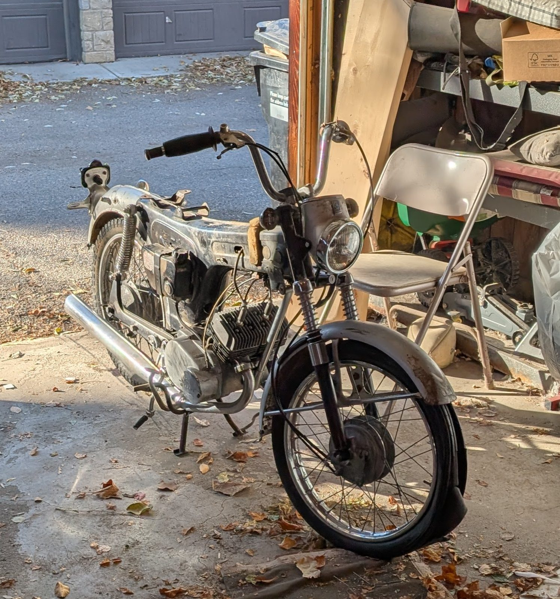

A 1966–1967 Yamaha YL1 Twin Jet 100, engine L1-47603: a 98 cc air-cooled parallel twin two-stroke with rotary valves and Autolube oil injection. Stripped down from November 2024 to January 2025. Assessment and the rebuild start in October 2026.

Every job from the strip-down to the break-in, with its tools, parts, specs, checks and schedule.
The bike in 3D on any day of the rebuild, beside the photo taken nearest that day.